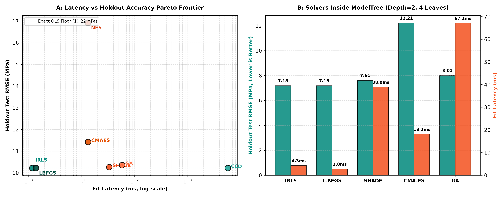

Generic Bounded Solvers & Hyperparameter Optimization (HPO)¶
Modern machine learning packages outsource numerical optimization to external heavyweight dependencies (SciPy, NLopt, Pagmo). When running in high-throughput production environments, cross-language FFI overhead and divergent solver interfaces introduce latency and unpredictability.
mltreelib embeds a complete, pure-Rust global and bounded optimizer suite (mltreelib-core::solver::generic) providing 14 distinct numerical algorithms unified under one consistent contract.
flowchart TD
A["Optimization Task: Black-Box Loss or Tree HPO"] --> B{"Problem Structure & Differentiability"}
B -- "Smooth & Gradient Available" --> C["L-BFGS-B / BFGS / Nonlinear-CG\nQuasi-Newton Hessian Approximation"]
B -- "Non-Smooth / Discontinuous" --> D["Nelder-Mead Simplex / Powell\nDirect Search Direction Sets"]
B -- "Highly Multimodal / Many Local Minima" --> E["SHADE / CMA-ES / Simulated Annealing\nAdaptive Evolutionary Population Swarms"]
B -- "Fast Parameter Exploration" --> F["Latin Hypercube / Sobol Sequences\nUniform Space-Filling Designs"]
C --> G["Bounded Optimum Vector θ*\nSubject to Low <= θ <= High"]
D --> G
E --> G
F --> G
classDef blueBox fill:#1e3a8a,stroke:#3b82f6,stroke-width:2px,color:#ffffff;
classDef greenBox fill:#14532d,stroke:#22c55e,stroke-width:2px,color:#ffffff;
classDef grayBox fill:#334155,stroke:#64748b,stroke-width:2px,color:#ffffff;
class A,B grayBox;
class C,D,E,F blueBox;
class G greenBox;
1. Solver Architecture: The 14 Supported Algorithms¶
All algorithms conform to the OptimizerKind enum with explicit box bounds \(\boldsymbol{l} \le \boldsymbol{\theta} \le \boldsymbol{u}\):
| Algorithm | Method Family | Order | Strengths & Best Use Cases |
|---|---|---|---|
LbfgsB |
Quasi-Newton | 1st (Gradient) | Smooth, continuous functions with box bounds. Fastest convergence per eval. |
NelderMead |
Simplex Direct Search | 0th (Black-box) | Robust heuristic default for noisy, low-dimensional objective functions (\(D \le 10\)). |
Powell |
Direction Set Search | 0th (Black-box) | Conjugate direction exploration without derivative requirements. |
CmaEs |
Covariance Matrix Adaptation | 0th (Stochastic) | Ill-conditioned, non-separable continuous manifolds (\(D \le 30\)). |
Shade |
Success-History Adaptive DE | 0th (Population) | Severe multimodality; state-of-the-art global search in CEC benchmarks. |
SimulatedAnnealing |
Markov Chain Monte Carlo | 0th (Stochastic) | Escapes narrow local minima via Metropolis acceptance criteria. |
Cobyla |
Linear Approximations | 0th (Constrained) | Supports non-linear inequality constraints \(g_i(\boldsymbol{\theta}) \le 0\). |
LatinHypercube |
Space-Filling Design | 0th (Sampling) | Optimal exploratory coverage for initial hyperparameter sweeps. |

2. Standalone Numerical Optimization: One-Shot & Ask-Tell Interface¶
Method A: One-Shot Minimization (optimize)¶
Minimizing the classic 2D Rosenbrock function (\(f(x, y) = (1 - x)^2 + 100(y - x^2)^2\)) inside bounds \([-5, 5] \times [-5, 5]\):
from mltreelib.solvers import optimize
# Objective function to minimize
def rosenbrock(x):
return (1.0 - x[0])**2 + 100.0 * (x[1] - x[0]**2)**2
bounds = [(-5.0, 5.0), (-5.0, 5.0)]
# Solve using Nelder-Mead simplex search
res = optimize(
rosenbrock,
bounds=bounds,
start=[0.0, 0.0],
method="nelder_mead",
max_evaluations=1000,
)
print(f"Status: {res.status} | Total Evaluations: {res.evaluations}")
print(f"Optimal Parameters: x* = {res.best_x[0]:.4f}, y* = {res.best_x[1]:.4f} (Loss = {res.best_value:.2e})")
Status: converged | Total Evaluations: 206
Optimal Parameters: x* = 1.0000, y* = 1.0000 (Loss = 2.65e-18)
Method B: Asynchronous Population Search (AskTell)¶
For expensive simulation models, distributed workers, or hardware-in-the-loop tuning, mltreelib provides the decoupled Ask-Tell paradigm:
from mltreelib.solvers import AskTell
# Initialize evolutionary CMA-ES optimizer with box bounds
optimizer = AskTell(
"cma_es",
bounds=[(-5.0, 5.0), (-5.0, 5.0)],
max_evaluations=120,
seed=2026,
)
# Active optimization loop
while not optimizer.should_stop:
# 1. Ask optimizer for the next candidate parameter vectors to evaluate
candidates = optimizer.ask()
# 2. Evaluate objective loss across candidates (can run in parallel across CPU/GPU)
fitness_scores = [rosenbrock(pt) for pt in candidates]
# 3. Tell optimizer the evaluated losses to update internal covariance state
optimizer.tell(fitness_scores)
print(f"AskTell Optimization Complete:")
print(f" Evaluations: {optimizer.evaluations}")
print(f" Best Solution: x* = {optimizer.best_x[0]:.4f}, y* = {optimizer.best_x[1]:.4f}")
print(f" Minimum Objective Loss: {optimizer.best_value:.4e}")
3. Automated Tree Hyperparameter Optimization (HPO)¶
Rather than manually guessing max_depth and min_rows, mltreelib wraps tree cross-validation directly inside the numerical optimizer:
import numpy as np
from mltreelib import ModelTree, Metrics
from mltreelib.solvers import optimize
# 1. Generate synthetic non-linear response surface
rng = np.random.default_rng(2026)
n_train, n_val = 1000, 300
X_train = rng.uniform(-3.0, 3.0, size=(n_train, 4))
y_train = X_train[:, 0] * 1.5 + np.sin(X_train[:, 1] * 2.0) + rng.normal(0, 0.2, n_train)
X_val = rng.uniform(-3.0, 3.0, size=(n_val, 4))
y_val = X_val[:, 0] * 1.5 + np.sin(X_val[:, 1] * 2.0) + rng.normal(0, 0.2, n_val)
metrics = Metrics()
# 2. Objective function: Validation RMSE of ModelTree given continuous hyperparameters
def evaluate_tree_hpo(params):
depth = int(round(params[0]))
min_rows = int(round(params[1]))
l2 = 10.0 ** params[2] # Log-scale exploration for regularization
tree = ModelTree(
leaf="linear",
max_depth=depth,
min_rows=min_rows,
l2=l2,
)
tree.fit(X_train, y_train.tolist())
pred_val = tree.predict(X_val)
return metrics.regression(y_val.tolist(), pred_val)["rmse"]
# Search bounds: depth in [1, 6], min_rows in [10, 60], log10(l2) in [-4, 1]
bounds = [(1.0, 6.0), (10.0, 60.0), (-4.0, 1.0)]
# 3. Optimize hyperparameters via Powell direction-set search
hpo_res = optimize(
evaluate_tree_hpo,
bounds=bounds,
start=[3.0, 30.0, -2.0],
method="powell",
max_evaluations=40,
)
best_depth = int(round(hpo_res.best_x[0]))
best_min_rows = int(round(hpo_res.best_x[1]))
best_l2 = 10.0 ** hpo_res.best_x[2]
print("HPO Search Results:")
print(f" Best Validation RMSE: {hpo_res.best_value:.4f}")
print(f" Optimal Configuration: max_depth={best_depth}, min_rows={best_min_rows}, l2={best_l2:.4e}")
Related Suites
- Suite 10: Solvers, Optimizers & Real-Data Tuning for full convergence benchmark tables.